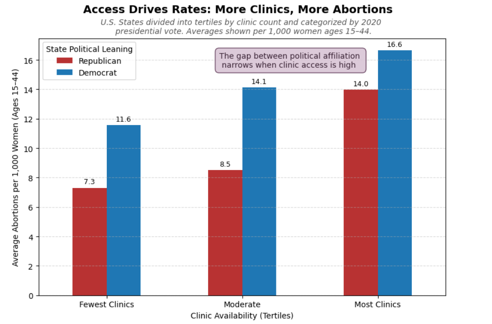
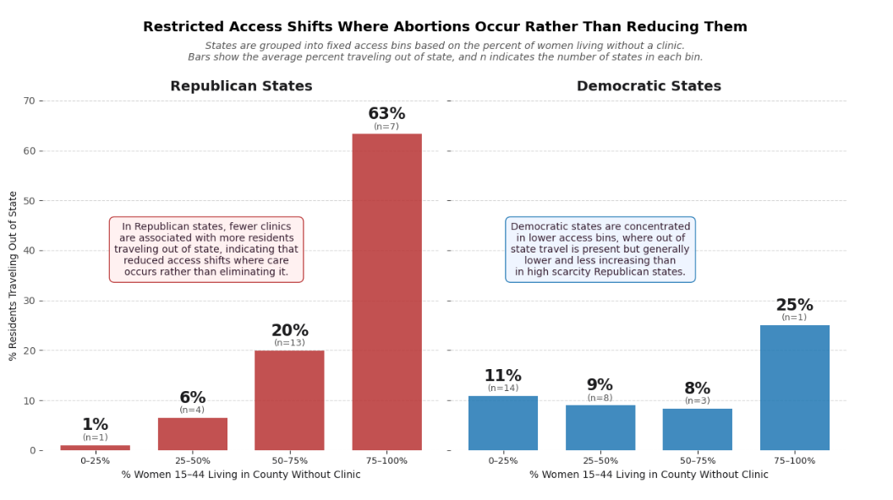

Proposition: Reducing access to abortion clinics results in a decrease in abortions
FOR the Proposition

Design Decisions and Rationale:
- States were aggregated into tertiles labeled Few, Moderate, and Most Clinics. Tertiles were chosen to simplify the data and make the overall trend easier to interpret. This decision is persuasive because it highlights a clear pattern in the data, but it may also hide variation within each group, which could weaken the strength of the trend if it was shown in full detail. A scatterplot displaying all states individually was considered, but grouping was chosen to avoid overplotting and to present a clearer argument. SCORE: 1.5
- Color was used to represent political affiliation, with red for Republican states and blue for Democratic states. These colors align with widely recognized U.S. political conventions, allowing viewers to quickly interpret the categories without additional explanation. This reinforces comparisons and improves clarity, but it may also introduce bias by emphasizing political differences. Neutral colors were considered, but red and blue were chosen for clarity and familiarity. SCORE: 1
- An annotation was included to highlight that the difference between Republican and Democratic states narrows as clinic access increases. This directs the viewer’s attention to a specific pattern that supports the argument, making the interpretation more immediate. While it is accurate, this decision is somewhat persuasive because it emphasizes a particular takeaway rather than allowing viewers to independently interpret the data. SCORE: -0.5
- The y-axis was started at zero to ensure that differences in bar height accurately reflects differences in abortion rates. This decision is fully earnest because it avoids exaggerating differences between groups and maintains visual integrity. While starting the axis above zero could have made differences appear larger and more dramatic, using a zero baseline ensures a more honest representation of the data. SCORE: 2
AGAINST the Proposition

Design Decisions and Rationale:
- Clinic availability was grouped into percentage-based bins to show how travel behavior changes as access decreases. This transformation simplifies a continuous variable into clear categories, making the trend easier to interpret. However, binning can hide variation within each range and may exaggerate differences between groups. A continuous line or scatterplot was considered, but binning and barcharts were chosen to create a clearer trend. SCORE: 1.5
- The visualization was split into two panels for Republican- and Democratic-leaning states. This separation allows for direct comparison between political groups without overlapping data, improving clarity. However, it may also exaggerate perceived differences by visually isolating the groups instead of showing them together. A combined chart was considered, but splitting them up was chosen to make comparisons more straightforward. SCORE: 0.5
- Color was used consistently, red for Republican states and blue for Democratic states, to align with familiar political conventions and maintain consistency with the first chart. This improves readability and helps viewers quickly interpret the categories. However, it may also bias interpretation by framing the data along political lines and emphasizing differences between groups. Neutral colors were considered, but red and blue were chosen for clarity and continuity. SCORE: 1
- The title explicitly states that restricted access shifts where abortions occur rather than reducing them. This framing guides the viewer toward a specific interpretation before analyzing the data, making the visualization more persuasive. While the conclusion is supported by the data, presenting it in the title reduces neutrality. A more descriptive title was considered, but a stronger claim was chosen to reinforce the argument. SCORE: -1
Final Reflection
[WRITE FINAL REFLECTION PARAGRAPHS HERE.]